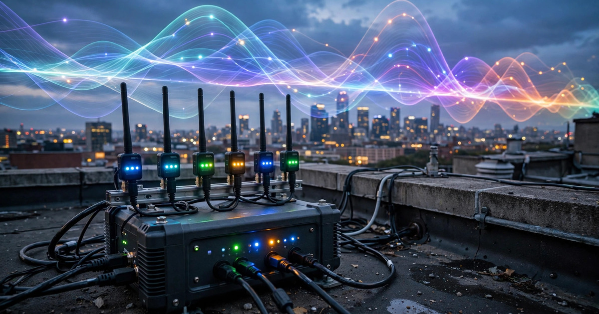

System and Method for Distributed Radio Frequency Spectrum Occupancy Mapping and Unauthorized Transmitter Geolocation Using Consumer-Grade Software-Defined Radio Mesh Networks with Edge-Deployed Deep Learning Signal Classification

Abstract
Disclosed is a system and method for continuous, wide-area radio frequency (RF) spectrum occupancy mapping and unauthorized transmitter detection using a distributed mesh network of consumer-grade software-defined radio (SDR) receiver nodes. Each node comprises an inexpensive SDR dongle (e.g., RTL-SDR Blog V4, unit cost ~$30), a single-board computer (e.g., Raspberry Pi 5), a GPS/GNSS receiver for time synchronization and position reference, and a broadband antenna covering 24 MHz to 1.7 GHz. Each node performs continuous wideband spectrum scanning, computes power spectral density across configurable frequency bands, and runs an edge-deployed convolutional neural network for automatic modulation classification (AMC) of detected signals. The system cross-references detected emissions against an on-device database of licensed spectrum allocations sourced from the FCC Universal Licensing System (ULS) and the NTIA frequency allocation chart, flagging transmissions that do not match any registered license for the node's geographic cell. When multiple nodes detect the same unregistered emission, collaborative time-difference-of-arrival (TDOA) analysis across GPS-synchronized nodes estimates the transmitter's geographic position with accuracy proportional to node density and baseline geometry. A gateway aggregation layer fuses per-node detection reports into a real-time spectrum occupancy map accessible via REST API, enabling applications in amateur radio interference hunting, drone incursion detection, public safety spectrum management, and community-driven spectrum enforcement.
Field of the Invention
This invention relates to radio frequency spectrum monitoring and management, specifically to distributed, low-cost sensor networks employing software-defined radios and machine learning for automated detection, classification, and geolocation of radio transmitters without requiring dedicated spectrum analysis equipment or government enforcement infrastructure.
Background
The electromagnetic spectrum is a finite public resource allocated by national regulatory bodies. In the United States, the FCC Enforcement Bureau is responsible for detecting and resolving unauthorized transmissions, but its field office infrastructure has contracted from 24 district offices in the 1990s to 13 regional offices today, while the number of licensed transmitters has grown from approximately 2 million to over 17 million. The FCC's direction-finding capability relies on mobile enforcement vehicles equipped with specialized equipment costing $150,000-$500,000 per unit, deployed reactively in response to interference complaints. Response times for interference complaints average 30-90 days for non-safety-of-life cases.
Professional spectrum monitoring systems exist but are prohibitively expensive for distributed deployment. Keysight spectrum analyzers capable of automated signal classification cost $15,000-$80,000 per unit. Rohde & Schwarz monitoring receivers designed for regulatory compliance cost $50,000-$200,000 per installation. CRFS RFeye Nodes, purpose-built networked spectrum monitoring sensors, cost approximately $20,000-$40,000 per node. At these price points, dense urban deployment (nodes every 500m-1km) is economically infeasible for any entity other than national regulators and military organizations.
Consumer-grade software-defined radios have dramatically reduced the cost of RF reception. The RTL-SDR Blog V4 provides continuous coverage from 500 kHz to 1.766 GHz with 8-bit ADC resolution, 2.56 MSPS maximum sample rate, and a noise figure of approximately 3.5 dB, at a unit cost of $30. The Airspy Mini offers 12-bit resolution with 6 MSPS bandwidth at $99. These devices, paired with commodity single-board computers ($35-$75), enable per-node costs two to three orders of magnitude below professional monitoring equipment.
Deep learning has transformed automatic modulation classification (AMC). O'Shea et al. (2018) demonstrated that residual convolutional neural networks achieve approximately 95% classification accuracy across 24 modulation types on the RadioML 2018.01A dataset at high SNR. Joint detection and AMC models (Physica Scripta, 2024) achieve 98-100% accuracy for 10 modulation types at SNR ≥ -4 dB using transfer learning on lightweight CNNs deployable on consumer hardware. Padhya et al. (2025) demonstrated CNN-LSTM hybrid architectures achieving 93.5% accuracy on over-the-air signals captured via SDR platforms, validating real-world deployability.
Prior art in distributed SDR monitoring includes Brinkman et al. (2024, NIU), who demonstrated a prototype wireless sensor network using SDR receivers and Bluetooth Low Energy mesh for unauthorized FM-band transmission detection. However, this work is limited to energy detection in a single narrowband (88-108 MHz FM), does not perform modulation classification, does not perform geolocation, and requires a centralized fusion center for all processing. The gap in the art is a complete, deployable system that: (a) performs wideband scanning across the full consumer SDR frequency range, (b) classifies detected signals by modulation type using on-device machine learning, (c) cross-references detections against regulatory licensing databases for automated compliance checking, (d) geolocates unauthorized transmitters via collaborative TDOA across distributed nodes, and (e) operates at consumer-grade price points enabling community-scale deployment.
Detailed Description
1. Sensor Node Hardware
Each sensor node comprises: a consumer SDR receiver (e.g., RTL-SDR Blog V4 with R828D tuner and RTL2832U demodulator, frequency range 500 kHz to 1.766 GHz, 8-bit I/Q samples at up to 2.56 MSPS, unit cost $30; or Airspy Mini with 12-bit resolution and 6 MSPS at $99 for higher-sensitivity deployments); a single-board computer with sufficient processing capability for edge inference (e.g., Raspberry Pi 5 with Broadcom BCM2712 quad-core Cortex-A76 at 2.4 GHz, 8 GB RAM, unit cost $80; or NVIDIA Jetson Orin Nano with 40 TOPS AI inference at $249 for GPU-accelerated classification); a GNSS receiver module (e.g., u-blox NEO-M9N, timing accuracy ±30 ns with PPS output, unit cost $25) providing both geographic position and GPS-disciplined timing reference for TDOA synchronization; a broadband discone or log-periodic antenna (e.g., Diamond D130NJ, 25-1300 MHz, unit cost $60-$120) with known gain pattern for signal strength calibration; and a weatherproof IP66-rated enclosure with passive cooling and PoE (Power over Ethernet) or solar/battery power supply. Target bill-of-materials cost per node: $175-$350 depending on SDR and compute selection. This is 50-200× cheaper than the least expensive professional monitoring node.
2. Wideband Spectrum Scanning Strategy
Consumer SDR receivers have instantaneous bandwidth limitations (2.56 MSPS for RTL-SDR, corresponding to ~2.4 MHz usable bandwidth per tuning step; 6 MSPS for Airspy Mini, corresponding to ~5 MHz). To monitor the full 24 MHz to 1.7 GHz range, the system employs a time-division frequency hopping scan strategy. The scan plan divides the monitored spectrum into discrete frequency bins, each equal to the SDR's usable bandwidth. For RTL-SDR: (1.766 GHz - 24 MHz) / 2.4 MHz ≈ 725 frequency bins. At a minimum dwell time of 20 ms per bin (sufficient for 512-sample FFT at 2.56 MSPS yielding 5 kHz frequency resolution), a full sweep requires approximately 14.5 seconds.
However, not all frequency ranges are of equal monitoring interest. The system implements a priority-weighted scan schedule with three tiers: Tier 1 (continuous monitoring, ~200 ms revisit) covers bands with known critical usage, including public safety frequencies (150-174 MHz, 450-470 MHz, 700-800 MHz), amateur radio allocations (144-148 MHz, 420-450 MHz), GMRS/FRS (462-467 MHz), and ISM bands (902-928 MHz); Tier 2 (periodic monitoring, ~5-second revisit) covers commercial broadcast (88-108 MHz FM, 174-216 MHz TV), cellular uplink/downlink bands, and aeronautical frequencies; Tier 3 (background survey, ~60-second revisit) covers remaining allocations for occupancy statistics and anomaly baseline development.
When an anomalous emission is detected in any tier, the scan plan dynamically allocates additional dwell time to that frequency, increasing the duty cycle on the anomaly to 50% until classification and characterization are complete. Adjacent nodes are notified via the mesh network to co-monitor the frequency for TDOA correlation.
3. Signal Detection and Feature Extraction
At each frequency bin dwell, raw I/Q samples are processed through the following pipeline: (a) DC offset removal using a first-order IIR filter to eliminate the LO leakage artifact common in direct-conversion SDR receivers; (b) power spectral density (PSD) estimation via Welch's method (512-point FFT, Blackman-Harris window, 75% overlap, 8 averages per dwell), producing a noise floor estimate with ~5 kHz frequency resolution; (c) adaptive noise floor estimation using a sliding-window median filter (window width: 100 kHz) that tracks the local noise floor independent of signal presence; (d) signal detection via comparison of PSD bins against the adaptive noise floor with a configurable threshold (default: 10 dB above noise floor, yielding a false alarm probability of approximately 10⁻⁶ per bin under Gaussian noise assumptions); (e) signal segmentation, grouping contiguous above-threshold bins into discrete detected signals with measured center frequency, bandwidth, and peak power.
For each detected signal, the system extracts a feature vector comprising: center frequency (Hz), measured bandwidth (Hz), peak received signal strength (dBm, calibrated against known antenna gain and cable loss), instantaneous SNR (dB), raw I/Q sample buffer (1024 complex samples at the SDR's native sample rate, centered on the detected signal), cyclostationary features (spectral correlation function at lag α = symbol rate candidates), and higher-order statistical moments (skewness, kurtosis of the I/Q constellation) for use in downstream classification.
4. Edge-Deployed Automatic Modulation Classification
Each detected signal's 1024-sample I/Q buffer is processed by an on-device CNN for automatic modulation classification. The classifier architecture is derived from the ResNet model validated on the RadioML 2018.01A dataset (O'Shea et al., 2018), adapted for edge deployment. The model comprises 4 residual blocks with [32, 64, 128, 128] filters respectively, 1D convolutions with kernel size 7, batch normalization, ReLU activation, and skip connections. Input shape: 2 × 1024 (I and Q channels). The model is quantized to INT8 using TensorFlow Lite post-training quantization, reducing model size from ~4.2 MB (FP32) to ~1.1 MB (INT8) with less than 1% accuracy degradation at SNR ≥ 0 dB. Inference time: approximately 15 ms per signal on Raspberry Pi 5 CPU, or 2 ms on Jetson Orin Nano GPU.
The classifier outputs probability vectors over the following modulation classes organized by category. Analog: AM-DSB, AM-SSB, FM narrowband (NFM), FM wideband (WFM). Digital phase-shift keying: BPSK, QPSK, 8PSK. Digital quadrature amplitude modulation: 16QAM, 64QAM, 256QAM. Digital frequency-shift keying: CPFSK, GFSK, MSK. Spread spectrum: FHSS (frequency-hopping spread spectrum), DSSS (direct-sequence spread spectrum). Pulsed: OOK (on-off keying), radar pulse. The classifier also outputs a "noise/unknown" class for signals that do not match any trained modulation type, which triggers a raw I/Q capture for offline analysis.
Classification confidence thresholds are set per modulation class (default: 0.75 for common modulations, 0.85 for spread-spectrum and pulsed signals that are more prone to false positives). Signals classified with confidence below threshold are logged as "unclassified" with their raw I/Q buffer preserved for later analysis. A secondary protocol identification layer maps classified modulation types, together with measured bandwidth and center frequency, to likely protocol identities: for example, NFM at 462.5625 MHz → GMRS Channel 1; GFSK at 2.402 GHz with 1 MHz bandwidth → Bluetooth advertising channel 37; QPSK at 137.5 MHz with 50 kHz bandwidth → NOAA APT weather satellite.
5. Regulatory Compliance Cross-Referencing
Each node maintains a local copy of the FCC Universal Licensing System (ULS) database, filtered to licenses active within a configurable radius (default: 50 km) of the node's GPS-determined position. The ULS database is publicly available via FCC bulk download and is updated weekly. The database contains: licensee call sign, authorized frequency or frequency range, authorized emission bandwidth and designation (e.g., "20K0F3E" = 20 kHz bandwidth, FM, telephony), authorized transmitter location (latitude/longitude), authorized effective radiated power (ERP), and license expiration date.
The system also incorporates the NTIA U.S. Frequency Allocation Chart, which defines the primary and secondary allocations for every frequency band in the United States (e.g., 144-148 MHz: Amateur, 462.5625-462.7250 MHz: GMRS, 902-928 MHz: ISM). Band allocations define what services are permitted; the ULS database defines who specifically is licensed.
For each detected and classified signal, the compliance engine performs the following checks: (a) Is the detected frequency within a band allocated for the identified service type? A narrow FM signal at 155.0 MHz is consistent with public safety allocation; the same modulation at 121.5 MHz (aeronautical emergency) would be flagged. (b) Does a valid ULS license exist for a transmitter at this frequency within the estimated coverage area of the detected signal? The system computes an estimated transmitter distance from received signal strength using the free-space path loss model adjusted for frequency and antenna gain, then queries the ULS database for licenses within that radius. (c) Does the detected emission bandwidth and modulation type match the authorized emission designator for the matched license? A 200 kHz wide FM signal on a frequency licensed for 12.5 kHz NFM would be flagged as a bandwidth violation even if the frequency itself is licensed.
Detected signals are categorized as: LICENSED (matched to a valid ULS entry with consistent modulation and bandwidth), UNLICENSED-ALLOCATED (in an allocated band like ISM or Part 15 where individual licensing is not required, but the emission is within regulatory limits), UNMATCHED (in a licensed band but no matching ULS entry found for the geographic area), or ANOMALOUS (emission characteristics inconsistent with any known allocation for the detected frequency). UNMATCHED and ANOMALOUS detections trigger the TDOA geolocation pipeline.
6. Collaborative TDOA Geolocation
When two or more nodes detect the same unregistered emission (matched by center frequency within ±1 kHz and modulation classification agreement), the system initiates collaborative TDOA geolocation. Each node timestamps the detected signal's leading edge using its GPS-disciplined clock. The GPS PPS (pulse per second) signal, with timing accuracy of ±30 ns for consumer-grade GNSS modules, provides the synchronization reference. Additional timing refinement is achieved via cross-correlation of the received I/Q samples between node pairs, improving timing resolution to approximately ±100 ns (corresponding to ±30 meters in range difference).
For a pair of nodes at known positions (x₁, y₁) and (x₂, y₂) separated by baseline distance d, the measured TDOA Δt defines a hyperbola of possible transmitter positions. With N nodes detecting the same signal, (N-1) independent TDOA measurements produce (N-1) hyperbolas whose intersection estimates the transmitter position. The system computes the maximum likelihood position estimate using iterative least-squares minimization of the TDOA residuals, weighted by each measurement's estimated uncertainty (a function of SNR and timing precision). Position dilution of precision (PDOP) is computed from the node geometry to provide an uncertainty ellipse around the estimated position.
For typical urban deployment with node spacing of 500 m to 1 km, two-node baselines yield position accuracy of approximately ±100-300 meters. Three or more nodes reduce this to ±30-100 meters. Four or more nodes with favorable geometry (PDOP < 3) achieve ±10-30 meters, sufficient for building-level identification. The system reports the estimated position, uncertainty ellipse, and PDOP for each geolocation fix.
Geolocation accuracy is fundamentally limited by the consumer SDR's sample rate, which constrains timing resolution. At 2.56 MSPS (RTL-SDR), one sample period is 390 ns, corresponding to approximately 117 meters of range-difference ambiguity. Cross-correlation peak interpolation using parabolic fitting recovers sub-sample timing precision of approximately 0.25 samples (97 ns, ~29 m). Higher-sample-rate receivers (Airspy Mini at 6 MSPS: 167 ns/sample, ~50 m per sample) proportionally improve geolocation precision.
7. Mesh Network Communication
Nodes communicate via a combination of local-area mesh networking and WAN backhaul. For local coordination (TDOA trigger messages, scan plan synchronization), nodes within direct radio range use a 900 MHz LoRa mesh (ISM band, license-exempt) with a custom TDMA protocol. Each node transmits a compressed heartbeat packet every 10 seconds containing: node ID (2 bytes), GPS position (8 bytes, Maidenhead grid square to 6 characters), current scan tier status (4 bytes), and anomaly alert flags (variable, 0-50 bytes per flagged emission). TDOA correlation requests include the detected signal's center frequency, modulation class, precise GPS timestamp, and a 256-sample I/Q snippet for cross-correlation. Total TDOA packet size: approximately 600 bytes.
For WAN backhaul (aggregation, database updates, API serving), nodes connect via Ethernet, WiFi, or cellular modem to a cloud aggregation service. Each node uploads detection reports at configurable intervals (default: 60 seconds) containing: per-band occupancy statistics (power spectral density percentiles), individual detection records (frequency, bandwidth, modulation, power, compliance status), TDOA geolocation results, and raw I/Q captures of anomalous signals (uploaded asynchronously, capped at 10 MB/hour/node to limit bandwidth).
8. Spectrum Occupancy Map and API
The aggregation layer fuses per-node detection reports into a unified spectrum occupancy map. The map comprises: a geographic grid (configurable resolution, default 250 m × 250 m cells for urban, 1 km × 1 km for rural) where each cell contains per-band occupancy statistics (duty cycle, average power, peak power, dominant modulation type) derived from all nodes whose antenna pattern covers that cell; a signal registry maintaining a list of all distinct emitters detected, each characterized by frequency, bandwidth, modulation type, estimated position (if geolocated), compliance status, first-seen and last-seen timestamps, and persistence (fraction of time the signal is present); and an anomaly feed listing all UNMATCHED and ANOMALOUS detections with geolocation estimates, sorted by confidence and persistence.
The map is served via a REST API (JSON format) with endpoints for: spatial queries (return all signals detected within a bounding box or radius of a point), spectral queries (return all signals detected within a frequency range), temporal queries (return occupancy history for a band and location over a specified time range), anomaly alerts (WebSocket stream of real-time UNMATCHED and ANOMALOUS detections), and node health (battery voltage, temperature, GPS lock status, scan cycle timing for each node). The API supports both pull (REST) and push (WebSocket, MQTT) delivery for integration with dashboards, alerting systems, and regulatory workflows.
9. Application Scenarios
- Amateur radio interference hunting: Amateur operators experiencing interference to their licensed frequencies deploy nodes around their operating area. The system detects, classifies, and geolocates the interfering transmitter, providing coordinates and emission characteristics sufficient for an FCC interference complaint with actionable direction-finding data rather than subjective reports.
- Drone incursion detection: Consumer drones communicate via 2.4 GHz and 5.8 GHz ISM-band spread-spectrum protocols (Wi-Fi, proprietary FHSS). The system detects drone control and video downlink signals, classifies the modulation type (which often identifies the drone manufacturer), and geolocates both the drone and its ground controller by triangulating the two distinct emissions. Airport perimeter, critical infrastructure, and event venue deployments provide persistent airspace awareness without dedicated radar.
- Public safety spectrum management: First responders during major incidents deploy temporary nodes to map spectrum occupancy in the incident area, identifying congested channels, locating interference sources, and finding clear frequencies for communications, replacing the manual process of frequency coordinators sweeping with handheld analyzers.
- Community-driven spectrum enforcement: Neighborhood or municipal deployments create persistent spectrum awareness, detecting illegal repeaters, pirate radio stations, unauthorized high-power CB/GMRS transmitters, and GPS/cellular jamming devices. Detection reports are formatted for direct submission to the FCC Enforcement Bureau's online complaint portal, including timestamp, frequency, modulation, estimated location, and calibrated signal strength evidence.
- Spectrum occupancy research: Regulatory bodies and academic researchers use the aggregated occupancy data to quantify actual spectrum utilization versus allocated spectrum, informing spectrum reallocation proceedings and dynamic spectrum access policy. The system generates the empirical data that the FCC Spectrum Dashboard currently lacks at fine geographic and temporal resolution.
10. Figures Description
- Figure 1: System architecture showing distributed SDR sensor nodes with LoRa mesh interconnect, WAN backhaul to cloud aggregation service, and REST API consumer applications (dashboard, alerting, regulatory submission).
- Figure 2: Wideband spectrum scan waterfall display from a single node, showing Tier 1 (continuous), Tier 2 (periodic), and Tier 3 (background) frequency bands with detected signals annotated by modulation classification.
- Figure 3: TDOA geolocation geometry for a four-node detection of an unregistered 462 MHz FM emission, showing three TDOA hyperbolas, their intersection, and the computed uncertainty ellipse (±45 m semi-major axis at 95% confidence).
- Figure 4: Geographic spectrum occupancy heatmap showing measured duty cycle in the 462-467 MHz GMRS band across a 5 km × 5 km urban area, with geolocated emitters marked and color-coded by compliance status (green = licensed, yellow = unlicensed-allocated, red = unmatched).
- Figure 5: Edge-deployed AMC classifier confusion matrix for 17 modulation types at SNR = 10 dB, demonstrating classification accuracy exceeding 90% for all modulation types except DSSS (82%) and FHSS (78%), consistent with the inherent difficulty of spread-spectrum detection below processing gain.
Claims
- A system for distributed radio frequency spectrum monitoring, comprising: a mesh network of geographically distributed sensor nodes, each containing a consumer-grade software-defined radio receiver, a single-board computer with on-device inference capability, a GNSS receiver providing position and timing reference, and a broadband antenna; wherein each node continuously scans configurable frequency ranges, detects emissions above an adaptive noise floor threshold, and classifies detected signals by modulation type using an edge-deployed convolutional neural network trained on radio frequency I/Q sample data.
- The system of claim 1, wherein the wideband scanning employs a priority-weighted time-division frequency hopping strategy that allocates dwell time across frequency bands based on configurable priority tiers, dynamically increasing monitoring duty cycle on bands where anomalous emissions are detected.
- The system of claim 1, further comprising a regulatory compliance cross-referencing module that maintains a local copy of a spectrum licensing database and compares each detected signal's frequency, modulation type, bandwidth, and estimated geographic origin against registered licenses and frequency allocation tables to classify detections as licensed, unlicensed-allocated, unmatched, or anomalous.
- The system of claim 1, further comprising a collaborative time-difference-of-arrival geolocation module that, when two or more nodes detect the same unregistered emission, computes the transmitter's estimated geographic position by intersecting TDOA hyperbolas derived from GPS-synchronized signal arrival timestamps and cross-correlation timing refinement.
- The system of claim 4, wherein timing synchronization across nodes is achieved using GPS pulse-per-second signals with sub-100 ns precision, and wherein cross-correlation of raw I/Q samples between node pairs provides sub-sample timing refinement via parabolic interpolation of the correlation peak, achieving range-difference resolution better than 30 meters.
- The system of claim 1, wherein the edge-deployed classifier is a quantized residual convolutional neural network derived from architectures validated on the RadioML benchmark dataset, quantized to INT8 precision for deployment on consumer single-board computers, and capable of classifying signals into analog, digital phase-shift keying, digital quadrature amplitude modulation, digital frequency-shift keying, spread spectrum, and pulsed modulation categories.
- The system of claim 6, further comprising a protocol identification layer that maps the classified modulation type, together with the detected signal's center frequency and bandwidth, to a likely protocol identity by querying a protocol-frequency-modulation lookup table populated from regulatory band plans and published radio standards.
- A method for detecting and geolocating unauthorized radio frequency transmitters, comprising: deploying a distributed mesh of consumer-grade software-defined radio sensor nodes with GPS-disciplined timing; continuously scanning frequency bands using a priority-weighted scan schedule; classifying detected signals by modulation type using on-device deep learning inference; cross-referencing each detection against a spectrum licensing database to identify signals with no matching license for the detection area; and when multiple nodes detect the same unregistered emission, computing the transmitter's geographic position via time-difference-of-arrival analysis across GPS-synchronized nodes.
- The method of claim 8, further comprising aggregating per-node detection reports into a unified spectrum occupancy map served via an API, wherein each geographic grid cell contains per-band occupancy statistics, a registry of distinct detected emitters with compliance classification, and an anomaly feed of unmatched and anomalous detections with geolocation estimates and uncertainty bounds.
- The method of claim 8, wherein the consumer-grade software-defined radio receiver has a unit cost below $100 and the total per-node bill-of-materials cost is below $400, enabling deployment densities of at least 4 nodes per square kilometer at a total hardware cost below the price of a single professional spectrum monitoring receiver.
- The system of claim 1, wherein the mesh network employs a LoRa radio link in an ISM frequency band for local inter-node coordination including TDOA trigger messages and scan plan synchronization, and a separate WAN backhaul link for uploading detection reports and raw I/Q captures to a cloud aggregation service.
Prior Art References
- FCC Enforcement Bureau — Federal spectrum enforcement authority and field office structure
- FCC Universal Licensing System (ULS) Public Access Database — Bulk download of all active FCC radio licenses
- NTIA U.S. Frequency Allocation Chart — Official federal spectrum allocation table
- RTL-SDR Blog V4 — Consumer SDR receiver specifications and pricing
- Airspy Mini — 12-bit consumer SDR receiver
- O'Shea, West, & Clancy (2018) — "Over-the-Air Deep Learning Based Radio Signal Classification," RadioML 2018.01A dataset and ResNet AMC architecture
- DeepSig RadioML Datasets — Standard benchmark datasets for automatic modulation classification
- DET-AMC: Joint Detection and Automatic Modulation Classification (Physica Scripta, 2024) — Lightweight CNN achieving 100% detection and 98% classification accuracy at -4 dB SNR on real SDR data
- Padhya et al. (2025) — CNN-LSTM hybrid architecture for over-the-air AMC using SDR, 93.5% accuracy on real signals
- Brinkman et al. (2024, Northern Illinois University) — Prototype SDR wireless sensor network for FM-band unauthorized transmission detection
- Keysight Spectrum Analyzers — Professional spectrum analysis equipment pricing
- CRFS RFeye Node — Purpose-built networked spectrum monitoring sensor
- FCC Online Complaint Portal — Interference complaint submission
- FCC Spectrum Dashboard — Current (limited) public spectrum occupancy data
- TensorFlow Lite — On-device ML runtime for edge inference on consumer hardware
- u-blox NEO-M9N — Consumer GNSS module with PPS timing output
- Semtech SX1262 — LoRa transceiver for ISM-band mesh networking